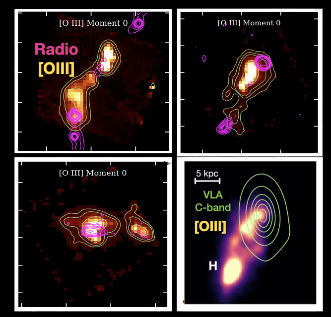
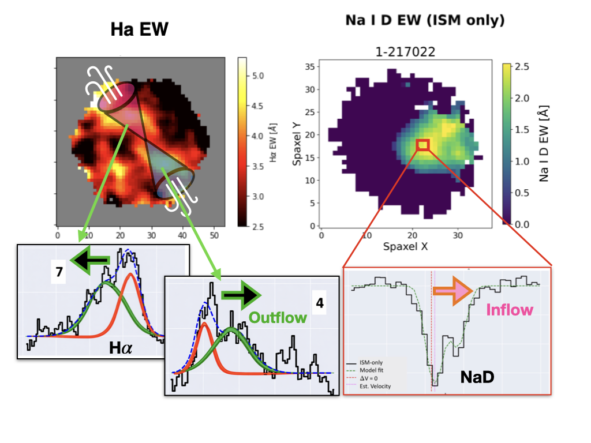
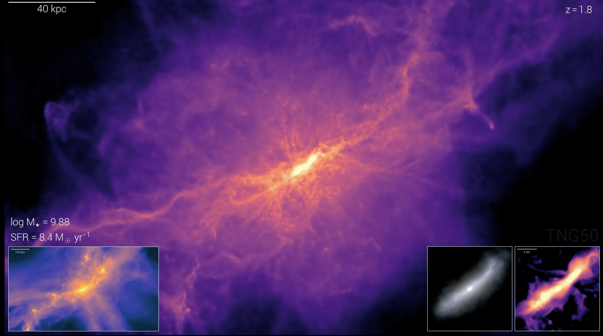
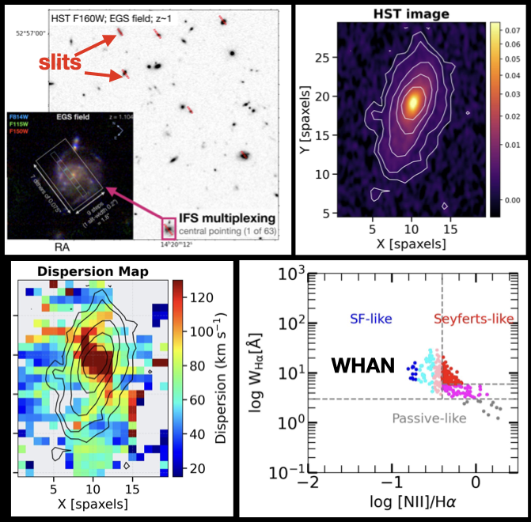
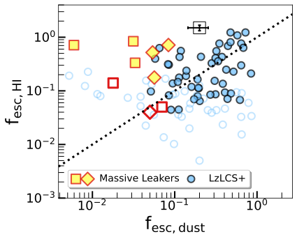
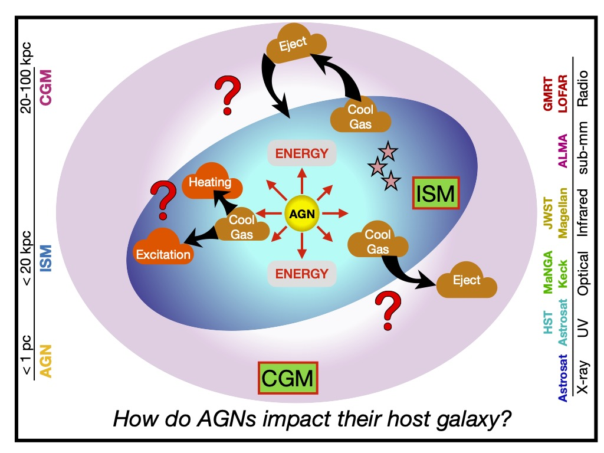
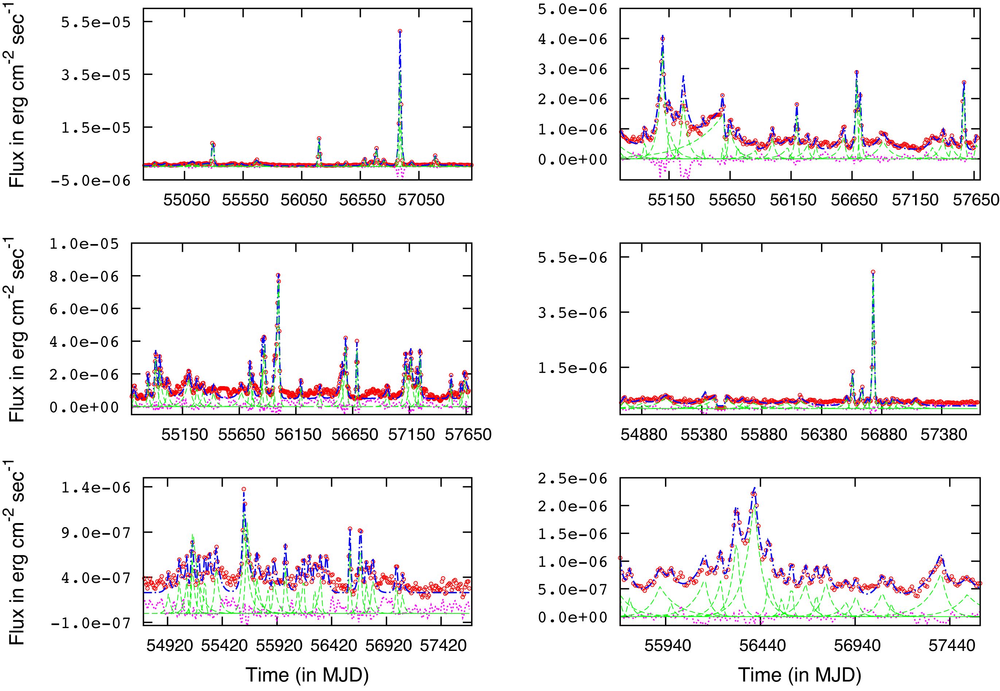

I study how galaxies acquire, transform, expel, and recycle gas across cosmic time. My work connects star formation and black-hole feedback, relativistic jets, outflows, the interstellar and circumgalactic baryon cycle, and the escape of ionizing photons using multi-wavelength observations from JWST, HST, Keck, Magellan, VLT, GMRT, LOFAR, VLA, DESI, MaNGA and large spectroscopic surveys.
What decides a galaxy's fate? What roles do black holes play in regulating gas flows, star formation, and galaxy growth? How do galaxies evolve over cosmic time?
I combine spatially resolved IFU and high resolution spectroscopy, absorption/emission-line diagnostics, multi wavelength (radio, UV, optical, IR, ) imaging, and theoretical modeling/ simulations.
My work links more than 5 orders of magnitude in spatial scale from sub-kpc ISM gas to hundred-kpc CGM halos, across redshifts from z ∼ 0 to the end of reionization at z > 6. I track multi-phase gas over a broad range of temperatures and densities.

JWST/NIRSpec IFU emission line map with radio contours overlaid shows powerful feedback and large-scale outflows co-spatial with radio lobes.
Massive galaxies in the early Universe often host rapidly growing black holes and powerful radio jets. I use JWST/NIRSpec integral-field spectroscopy to map how these jets interact with dense interstellar gas, drive fast ionized outflows, and redistribute energy during the epoch when massive galaxies and their black holes are assembling most rapidly.
In TN J1338-1942 at z = 4.1, we spatially resolved a roughly 15 kpc ionized outflow, with velocities exceeding 900 km/s, line widths above 1200 km/s, and an integrated warm-ionized mass outflow rate of roughly 500 solar masses per year. The outflow overlaps the brightest radio lobe, pointing to radio-jet-driven feedback. In a larger JWST/NIRSpec sample of z ~ 3.5-4 radio galaxies, we find broad [O III] emission, jet-aligned nebulae, and ionized outflow masses of order 10^9 solar masses.
Red geysers are quiescent early-type galaxies with weak but persistent ionized gas outflows. They provide a nearby laboratory for studying how low-luminosity black holes may keep galaxies dormant without the dramatic quasar-like feedback seen in luminous AGN.
My work connects three parts of the same feedback cycle: radio-mode AGN activity, galaxy-scale ionized winds, and cool neutral gas that may fuel the central engine. Using MaNGA, Keck/ESI, LOFAR, FIRST, VLASS, and Na I D absorption, I showed that red geysers host enhanced low-luminosity radio emission, kpc-scale ionized wind signatures, and substantial cool gas reservoirs. The cool gas is often inflowing rather than outflowing, suggesting a self-regulated cycle in which gas accretion feeds weak radio AGN activity, while the resulting feedback suppresses star formation.

SDSS-IV MaNGA IFU data of a nearby red geyser galaxy, showing simultaneous outflowing ionized wind and infalling cool neutral gas, tracing a galactic fountain.

(credit: TNG 50 simulations) Large CGM scale gas is highly clumpy and anisotropic, and can be substantially affected by feedback processes.
A central goal of my research is to test whether star formation and black hole driven outflows regulate not only the gas inside galaxies, but also the larger circumgalactic medium, which is the extended reservoir that fuels future star formation. Population-averaged measurements can wash out directional feedback signals, especially when feedback energy couples to gas anisotropically.
I am developing strategies that combine radio constraints, background-quasar line-of-sight UV spectroscopy, and optical/IR emission-line measurements to understand how feedback impacts multiple gas phases across five orders of magnitude spatial scales (~1 pc - 100 kpc) from ISM all the way upto the CGM. This will put a strong constraint on the total mass, momentum and energy budget of galaxies and the redistribution of baryons on halo scales.
To understand galaxy evolution, we need to map not only extreme AGN hosts but also the ordinary star-forming galaxies that build the Hubble sequence. With the JWST/NIRSpec MSA-3D survey, I study ionized gas morphology, excitation, metallicity, and kinematics in the ISM of galaxies at 0.5 < z < 1.7 using a new slit-stepping technique that turns NIRSpec’s multi-object slitlets into IFU-like datacubes.
This approach is powerful because it enables spatially resolved spectroscopy for many galaxies at once, making IFU-style surveys far more time-efficient than traditional one-object-at-a-time observations. MSA-3D therefore demonstrates a ground-breaking observing mode that can be adapted for future space-based telescopes equipped with slit spectrographs, and opens up a new path into the large spatially resolved surveys of galaxy evolution across cosmic time. My work uses these datacubes to reveal weak AGN, shocks, and low-power outflows that would be difficult to identify in integrated spectra alone.

JWST/NIRSpec MSA-3D maps reveal weak AGN/shock-driven outflows hidden within z ∼ 1 star-forming galaxies: regions of elevated velocity dispersion align with non-stellar ionization traced by WHAN diagnostics.

The fraction of LyC photons escaping into the IGM is determined by two main factors: H I absorption and dust attenuation. Here, LyC escape fractions considering only H I absorption fesc,HI are compared with those considering only dust attenuation fesc,dust. Most massive, compact starbursts (yellow) lie above the 1:1 line, suggesting their LyC escape fractions would be higher if not significantly reduced by dust attenuation.
The first stars and galaxies reionized the Universe, but the pathways by which Lyman-continuum (LyC) photons escape from dense, dusty star-forming regions into the Intergalactic Medium (IGM) remain uncertain. While answering this question can be best done in high redshift galaxies near the Epoch of Reionization (EoR), their low redshift analogs can be studied in extraordinary details, unlike their high redshift counterparts. I use HST/COS, JWST/NIRSpec, and VLT/MUSE observations of low-redshift analogs and combine that with constraints from high z ~ 3-6 Lyα emitters to test indirect diagnostics of LyC leakage.
Here, we investigated a new class of LyC leakers at low redshift, which unlike traditional leakers, are massive, dust-heavy, and low ionization. We found that three out of five such systems leak high LyC radiation. Their dust-corrected escape fractions are high, but their absolute escape fractions are suppressed by dust, suggesting a “picket-fence” geometry in which feedback-driven channels allow ionizing photons to escape through low-column-density sightlines.
Different wavelengths reveal different pieces of the baryon cycle in galaxies. Rest-frame optical emission lines trace warm ionized gas, UV absorption probes neutral, low-ionization as well as highly ionized material, radio continuum reveals relativistic plasma and jets, infrared data constrain obscured star formation, shocks and AGN, while X-rays can reveal hot shocked gas.
A major theme of my work is to combine these tracers into a physically coherent picture of how gas moves through galaxies and halos. This approach lets me connect emission and absorption spectroscopy, cold and warm gas, weak and powerful black holes, local galaxies and the high-redshift Universe across almost 5 orders of magnitude in physical scale.

A schematic of multi-wavelength multi-scale processes in galaxy ecosystems.

Suggested figure: existing Fermi gamma-ray light-curve panel from your current page.
Blazars are active galactic nuclei whose relativistic jets are pointed almost directly toward our line of sight, making them powerful probes of particle acceleration, radiative cooling, and disk-jet coupling close to supermassive black holes.
In my earlier work, I analyzed long- and short-timescale multi-wavelength blazar outbursts using Fermi gamma-ray light curves and Yale/SMARTS optical monitoring data. The symmetry of these flares constrains whether the observed variability is dominated by light-crossing times, acceleration, cooling, or changes in the energy-injection history of the jet.